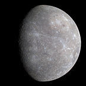

| Name | Mass (1024kg) | Diameter (km) | Density (kg/m3) | Gravity (m/s2) | Length of day (hours) | Distance from Sun (106km) | Mean temperature°C | Number of moons | Notes | Image | ||
| Terrestial planets | Mercury | 0.330 | 4,879 | 5,427 | 3.7 | 4,222.6 | 57.9 | 167 | 0 | Closest to the Sun |  | |
| Venus | 4.87 | 12,104 | 5,243 | 8.9 | 2,802 | 108.2 | 464 | 0 |  |
|||
| Earth | 5.97 | 12,756 | 5,514 | 9.8 | 24 | 149.6 | 15 | 1 | Our world |  |
||
| Mars | 0.642 | 6,792 | 3,933 | 3.7 | 24.7 | 227.9 | -65 | 2 | The red planet |  |
||
| Jovian planets | Gas giants | Jupiter | 1,898 | 142,984 | 1,326 | 23.1 | 9.9 | 778.6 | -110 | 67 | The largest planet |  |
| Saturn | 568 | 120,536 | 687 | 9 | 10.7 | 1,433.5 | -140 | 62 |  |
|||
| Ice giants | Uranus | 86.6 | 51,118 | 1,271 | 8.7 | 17.2 | 2,872.5 | -195 | 27 |  |
||
| Neptune | 102 | 49,528 | 1,638 | 11 | 16.1 | 4,495.1 | -200 | 14 |  |
|||
| Dwarf planets | Pluto | 0.0146 | 2,370 | 2,095 | 0.7 | 153.3 | 5,906.4 | -225 | 5 | Declassified as a planet in 2006, but this remains controversial. |  |
|